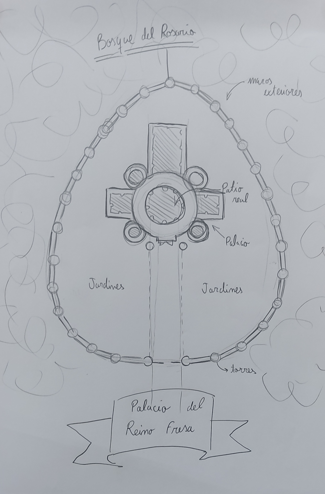
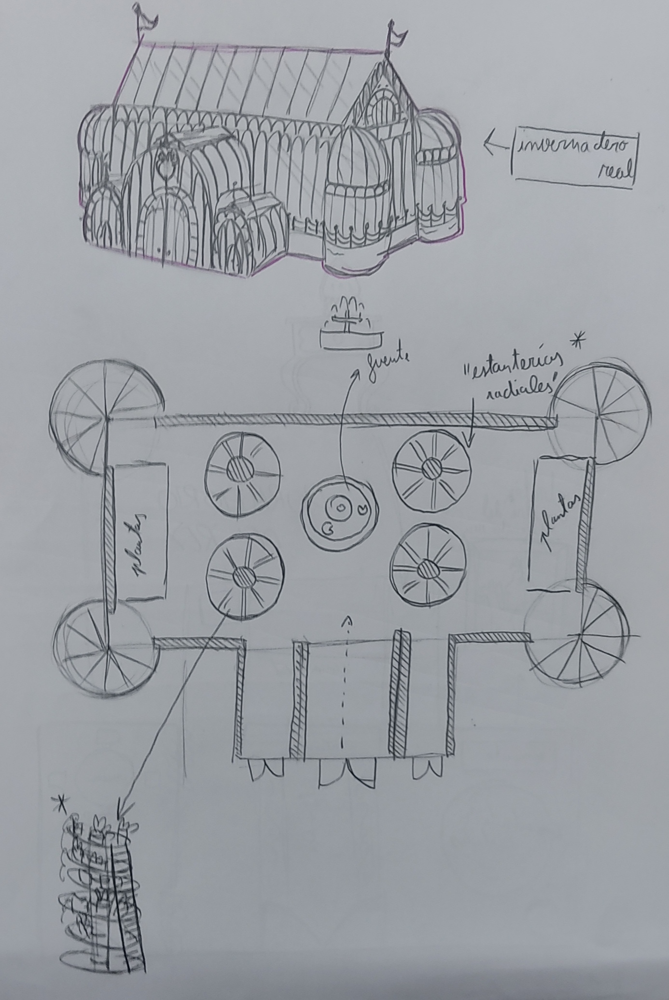
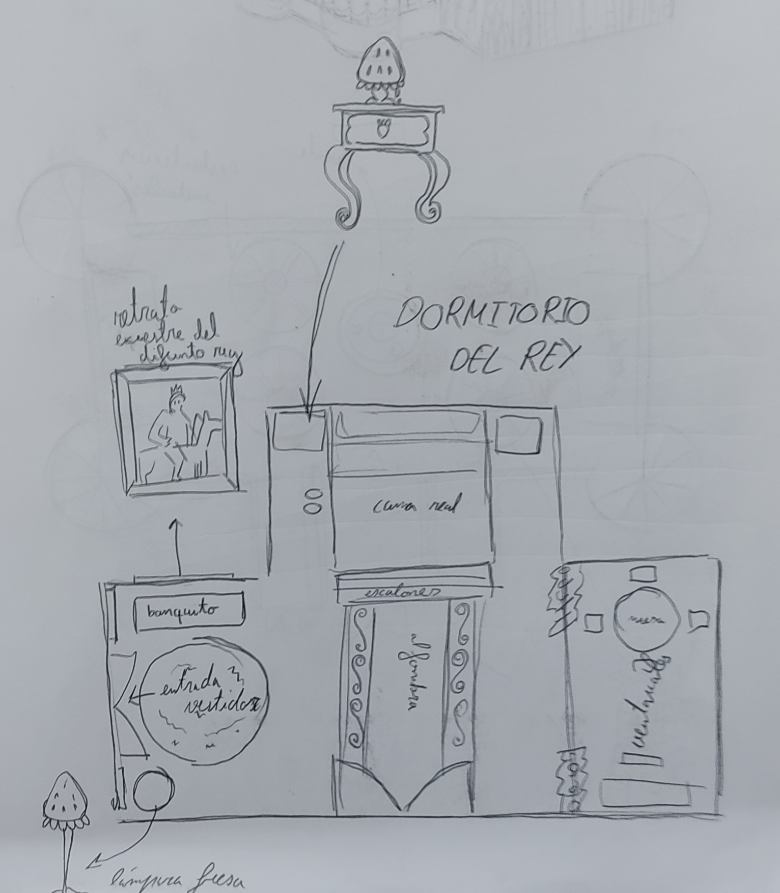

PALACIO FRESA
inicio
información
general
Rey Fresa
Reino Fresa
¿Qué hay?
Estos son algunos de los planos hechos por los arquitectos del reino de las estancias reales:

Exterior del palacio

Dormitorio del rey

Invernadero real